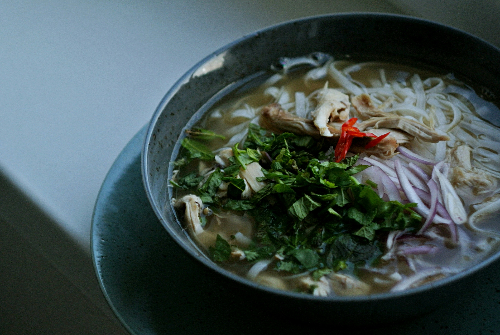

Traditional Pho Recipe

Vietnamese Pho
Pho is a Vietnamese soup dish made with broth, rice noodles, herbs, and meat or tofu.
Ingredients
- Beef Broth
- Yelllow Onion
- Fresh Ginger
- Spice Mixture
Steps
- Quarter the onion
- Add the onion and the ginger to a large pot
- Cood over medium heat for roughly four(4) minutes
- Add the broth and spice mixture
- Simmer for at least 30 minutes